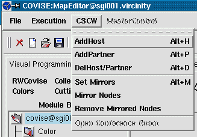
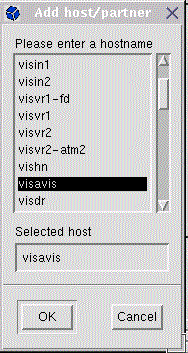
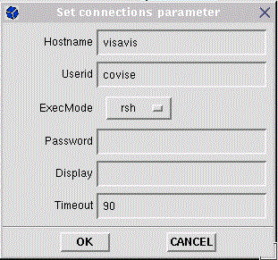
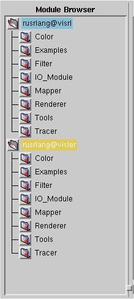

Otherwise not all options may be available and you may get compatibility problems. |
|  |
With the options provided by CSCW you
you can introduce additional hosts at nearly every moment of a COVISE session. The purpose is to make use of specific resources such as supercomputers or fileservers. Even if the added host is another workstation, it is not added to a cooperative working session (distributed, not collaborative working).
By AddPartner...
you invite a partner to participate in
a current COVISE session (collaborative working). As initiating partner
you play the Master role.
Note:
|
||||
|
To add a host/partner go thru the following steps:
|  |  |
|  | When the remote computer is
added successfully, an entry for this host (selection tree) will be added
to the ModuleBrowser (see left picture for an example) .
In case of AddPartner a MapEditor will pop up on the remote workstation. To choose a module from an added host,
select first the corresponding hostname in the module browser and proceed
then with module selection as usual (using the relevant branch of the ModuleBrowser).
If specified in the COVISE configuration file, new host and modules from
the host get the same color (different from your host), otherwise you get
qualified module names (hostname::module name).
|
DelHost/Partner is just the
inverse operation.
For functions available as Slave see option MasterControl
To send infomation to partners (independent from master or slave state) use the Chat Line (and receive information in the Message Area).
For general information on distributed and collaborative working see Collaborative Working, Tutorial (Advanced Topics), and User's Guide, chapter COVISE CE.
The following three menu options are provided
for mirroring a whole pipeline
(also distributed) or part of it to another host (and to delete it).